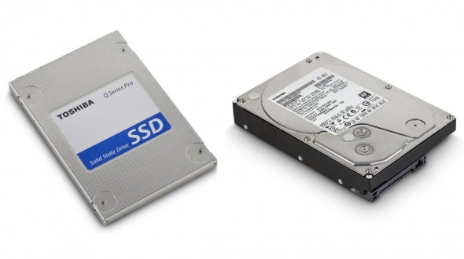

Жёсткий диск предназначен для долговременного хранения информации.

HDD имеет объём от 500 ГБ до 10 ТБ и даже больше. Такая память работает достаточно медленно, поэтому на компьютеры чаще устанавливают жёсткие диски типа SSD. Они обладают гораздо большей скоростью, но имеют меньший объём (редко встретишь экземпляр объёмом больше 1-2 ТБ).